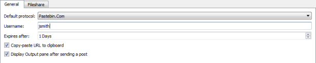

Pasting and Fetching Code Snippets
In Qt Creator, you can paste snippets of code to a server or fetch snippets of code from the server. To paste and fetch snippets of code, Qt Creator uses the following:
- Pastebin.Com
- Pastecode.Xyz
- Shared network drives
Specifying Settings for Code Pasting
To specify settings for the code pasting service:
- Select Tools > Options > Code Pasting.

- In the Default protocol field, select a code pasting service to use by default.
- In the Username field, enter your username.
- In the Expires after field, specify the time to keep the pasted snippet on the server.
- Select the Copy-paste URL to clipboard check box to copy the URL of the post on the code pasting service to the clipboard when you paste a post.
- Select the Display Output pane after sending a post check box to display the URL in the General Messages output pane when you paste a post.
Select Fileshare to specify the path to a shared network drive. The code snippets are copied to the drive as simple files. You have to delete obsolete files from the drive manually.
Using Code Pasting Services
To paste a snippet of code onto the server, select Tools > Code Pasting > Paste Snippet or press Alt+C,Alt+P. By default, Qt Creator copies the URL of the snippet to the clipboard and displays the URL in the General Messages output pane.
To paste any content that you copied to the clipboard, select Tools > Code Pasting > Paste Snippet.
To paste content from the diff editor, right-click a chunk and select Send Chunk to CodePaster in the context menu.
To fetch a snippet of code from the server, select Tools > Code Pasting > Fetch Snippet or press Alt+C,Alt+F. Select the snippet to fetch from the list.
To fetch the content stored at an URL, select Tools > Code Pasting > Fetch from URL.
For example, you might ask colleagues to review a change that you plan to submit to a version control system. If you use the Git version control system, you can create a diff view by selecting Tools > Git > Local Repository > Diff. You can then upload its contents to the server by selecting Tools > Code Pasting > Paste Snippet. The reviewers can retrieve the code snippet by selecting Tools > Code Pasting > Fetch Snippet. If they have the project currently opened in Qt Creator, they can apply and test the change by choosing Tools > Git > Local Repository > Patch > Apply from Editor.